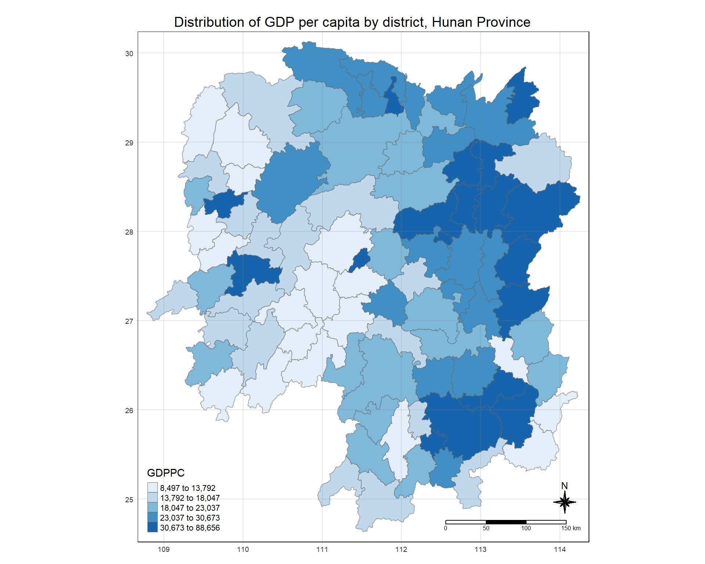

Show the code
pacman::p_load(sf, sfdep, tmap, tidyverse, knitr)February 10, 2023
November 24, 2023
This in-class introduces an alternative R package to spdep package you used in Hands-on Exercise 6. The package is called sfdep. According to Josiah Parry, the developer of the package, “sfdep builds on the great shoulders of spdep package for spatial dependence. sfdep creates an sf and tidyverse friendly interface to the package as well as introduces new functionality that is not present in spdep. sfdep utilizes list columns extensively to make this interface possible.”
Four R packages will be used for this in-class exercise, they are: sf, sfdep, tmap, tidyverse.
Using the steps you learned in previous lesson, install and load sf, tmap, sfdep, tidyverse and knitr packages into R environment.
For the purpose of this in-class exercise, the Hunan data sets will be used. There are two data sets in this use case, they are:
Using the steps you learned in previous lesson, import Hunan shapefile into R environment as an sf data frame.
Reading layer `Hunan' from data source
`D:\tskam\ISSS624\In-class_Ex\In-class_Ex2\data\geospatial'
using driver `ESRI Shapefile'
Simple feature collection with 88 features and 7 fields
Geometry type: POLYGON
Dimension: XY
Bounding box: xmin: 108.7831 ymin: 24.6342 xmax: 114.2544 ymax: 30.12812
Geodetic CRS: WGS 84Using the steps you learned in previous lesson, import Hunan_2012.csv into R environment as an tibble data frame.
Using the steps you learned in previous lesson, combine the Hunan sf data frame and Hunan_2012 data frame. Ensure that the output is an sf data frame.
In order to retain the geospatial properties, the left data frame must the sf data.frame (i.e. hunan)
Using the steps you learned in previous lesson, plot a choropleth map showing the distribution of GDPPC of Hunan Province.
The choropleth should look similar to ther figure below.
tmap_mode("plot")
tm_shape(hunan_GDPPC) +
tm_fill("GDPPC",
style = "quantile",
palette = "Blues",
title = "GDPPC") +
tm_borders(alpha = 0.5) +
tm_layout(main.title = "Distribution of GDP per capita by district, Hunan Province",
main.title.position = "center",
main.title.size = 1.2,
legend.height = 0.45,
legend.width = 0.35,
frame = TRUE) +
tm_compass(type="8star", size = 2) +
tm_scale_bar() +
tm_grid(alpha =0.2)
By and large, there are two types of spatial weights, they are contiguity wights and distance-based weights. In this section, you will learn how to derive contiguity spatial weights by using sfdep.
Two steps are required to derive a contiguity spatial weights, they are:
identifying contiguity neighbour list by st_contiguity() of sfdep package, and
deriving the contiguity spatial weights by using st_weights() of sfdep package
In this section, we will learn how to derive the contiguity neighbour list and contiguity spatial weights separately. Then, we will learn how to combine both steps into a single process.
In the code chunk below st_contiguity() is used to derive a contiguity neighbour list by using Queen’s method.
By default, queen argument is TRUE. If you do not specify queen = FALSE, this function will return a list of first order neighbours by using the Queen criteria. Rooks method will be used to identify the first order neighbour if queen = FALSE is used.
The code chunk below is used to print the summary of the first lag neighbour list (i.e. nb) .
Neighbour list object:
Number of regions: 88
Number of nonzero links: 448
Percentage nonzero weights: 5.785124
Average number of links: 5.090909
Link number distribution:
1 2 3 4 5 6 7 8 9 11
2 2 12 16 24 14 11 4 2 1
2 least connected regions:
30 65 with 1 link
1 most connected region:
85 with 11 linksThe summary report above shows that there are 88 area units in Hunan province. The most connected area unit has 11 neighbours. There are two are units with only one neighbour.
To view the content of the data table, you can either display the output data frame on RStudio data viewer or by printing out the first ten records by using the code chunk below.
Simple feature collection with 88 features and 7 fields
Geometry type: POLYGON
Dimension: XY
Bounding box: xmin: 108.7831 ymin: 24.6342 xmax: 114.2544 ymax: 30.12812
Geodetic CRS: WGS 84
First 10 features:
nb NAME_2 ID_3 NAME_3 ENGTYPE_3
1 2, 3, 4, 57, 85 Changde 21098 Anxiang County
2 1, 57, 58, 78, 85 Changde 21100 Hanshou County
3 1, 4, 5, 85 Changde 21101 Jinshi County City
4 1, 3, 5, 6 Changde 21102 Li County
5 3, 4, 6, 85 Changde 21103 Linli County
6 4, 5, 69, 75, 85 Changde 21104 Shimen County
7 67, 71, 74, 84 Changsha 21109 Liuyang County City
8 9, 46, 47, 56, 78, 80, 86 Changsha 21110 Ningxiang County
9 8, 66, 68, 78, 84, 86 Changsha 21111 Wangcheng County
10 16, 17, 19, 20, 22, 70, 72, 73 Chenzhou 21112 Anren County
County GDPPC geometry
1 Anxiang 23667 POLYGON ((112.0625 29.75523...
2 Hanshou 20981 POLYGON ((112.2288 29.11684...
3 Jinshi 34592 POLYGON ((111.8927 29.6013,...
4 Li 24473 POLYGON ((111.3731 29.94649...
5 Linli 25554 POLYGON ((111.6324 29.76288...
6 Shimen 27137 POLYGON ((110.8825 30.11675...
7 Liuyang 63118 POLYGON ((113.9905 28.5682,...
8 Ningxiang 62202 POLYGON ((112.7181 28.38299...
9 Wangcheng 70666 POLYGON ((112.7914 28.52688...
10 Anren 12761 POLYGON ((113.1757 26.82734...The print shows that polygon 1 has five neighbours. They are polygons number 2, 3, 4, 57,and 85.
One of the advantage of sfdep over spdep is that the output is an sf tibble data frame.
Using the steps you learned in previous lesson, display nb_queen sf tibble data frame in a table display.
| nb | NAME_2 | ID_3 | NAME_3 | ENGTYPE_3 | County | GDPPC | geometry |
|---|---|---|---|---|---|---|---|
| 2, 3, 4, 57, 85 | Changde | 21098 | Anxiang | County | Anxiang | 23667 | POLYGON ((112.0625 29.75523… |
| 1, 57, 58, 78, 85 | Changde | 21100 | Hanshou | County | Hanshou | 20981 | POLYGON ((112.2288 29.11684… |
| 1, 4, 5, 85 | Changde | 21101 | Jinshi | County City | Jinshi | 34592 | POLYGON ((111.8927 29.6013,… |
| 1, 3, 5, 6 | Changde | 21102 | Li | County | Li | 24473 | POLYGON ((111.3731 29.94649… |
| 3, 4, 6, 85 | Changde | 21103 | Linli | County | Linli | 25554 | POLYGON ((111.6324 29.76288… |
| 4, 5, 69, 75, 85 | Changde | 21104 | Shimen | County | Shimen | 27137 | POLYGON ((110.8825 30.11675… |
| 67, 71, 74, 84 | Changsha | 21109 | Liuyang | County City | Liuyang | 63118 | POLYGON ((113.9905 28.5682,… |
| 9, 46, 47, 56, 78, 80, 86 | Changsha | 21110 | Ningxiang | County | Ningxiang | 62202 | POLYGON ((112.7181 28.38299… |
| 8, 66, 68, 78, 84, 86 | Changsha | 21111 | Wangcheng | County | Wangcheng | 70666 | POLYGON ((112.7914 28.52688… |
| 16, 17, 19, 20, 22, 70, 72, 73 | Chenzhou | 21112 | Anren | County | Anren | 12761 | POLYGON ((113.1757 26.82734… |
Using the steps you just learned, derive a contiguity neighbour list using Rooks’ method.
There are times that we need to identify high order contiguity neighbours. To accomplish the task, st_nb_lag_cumul() should be used as shown in the code chunk below.
Using the steps you just learned, derive a contiguity neighbour list using lag 2 Queen’s method.
Note that if the order is 2, the result contains both 1st and 2nd order neighbors as shown on the print below.
Simple feature collection with 88 features and 8 fields
Geometry type: POLYGON
Dimension: XY
Bounding box: xmin: 108.7831 ymin: 24.6342 xmax: 114.2544 ymax: 30.12812
Geodetic CRS: WGS 84
First 10 features:
nb
1 2, 3, 4, 57, 85
2 1, 57, 58, 78, 85
3 1, 4, 5, 85
4 1, 3, 5, 6
5 3, 4, 6, 85
6 4, 5, 69, 75, 85
7 67, 71, 74, 84
8 9, 46, 47, 56, 78, 80, 86
9 8, 66, 68, 78, 84, 86
10 16, 17, 19, 20, 22, 70, 72, 73
nb2
1 2, 3, 4, 5, 6, 32, 56, 57, 58, 64, 69, 75, 76, 78, 85
2 1, 3, 4, 5, 6, 8, 9, 32, 56, 57, 58, 64, 68, 69, 75, 76, 78, 85
3 1, 2, 4, 5, 6, 32, 56, 57, 69, 75, 78, 85
4 1, 2, 3, 5, 6, 57, 69, 75, 85
5 1, 2, 3, 4, 6, 32, 56, 57, 69, 75, 78, 85
6 1, 2, 3, 4, 5, 32, 53, 55, 56, 57, 69, 75, 78, 85
7 9, 19, 66, 67, 71, 73, 74, 76, 84, 86
8 2, 9, 19, 21, 31, 32, 34, 35, 36, 41, 45, 46, 47, 56, 58, 66, 68, 74, 78, 80, 84, 85, 86
9 2, 7, 8, 19, 21, 35, 46, 47, 56, 58, 66, 67, 68, 74, 76, 78, 80, 84, 85, 86
10 11, 14, 15, 16, 17, 18, 19, 20, 21, 22, 23, 70, 71, 72, 73, 74, 82, 83, 86
NAME_2 ID_3 NAME_3 ENGTYPE_3 County GDPPC
1 Changde 21098 Anxiang County Anxiang 23667
2 Changde 21100 Hanshou County Hanshou 20981
3 Changde 21101 Jinshi County City Jinshi 34592
4 Changde 21102 Li County Li 24473
5 Changde 21103 Linli County Linli 25554
6 Changde 21104 Shimen County Shimen 27137
7 Changsha 21109 Liuyang County City Liuyang 63118
8 Changsha 21110 Ningxiang County Ningxiang 62202
9 Changsha 21111 Wangcheng County Wangcheng 70666
10 Chenzhou 21112 Anren County Anren 12761
geometry
1 POLYGON ((112.0625 29.75523...
2 POLYGON ((112.2288 29.11684...
3 POLYGON ((111.8927 29.6013,...
4 POLYGON ((111.3731 29.94649...
5 POLYGON ((111.6324 29.76288...
6 POLYGON ((110.8825 30.11675...
7 POLYGON ((113.9905 28.5682,...
8 POLYGON ((112.7181 28.38299...
9 POLYGON ((112.7914 28.52688...
10 POLYGON ((113.1757 26.82734...Now, you are ready to compute the contiguity weights by using st_weights() of sfdep package.
In the code chunk below, queen method is used to derive the contiguity weights.
Notice that st_weights() provides tree arguments, they are:
Simple feature collection with 88 features and 8 fields
Geometry type: POLYGON
Dimension: XY
Bounding box: xmin: 108.7831 ymin: 24.6342 xmax: 114.2544 ymax: 30.12812
Geodetic CRS: WGS 84
First 10 features:
nb
1 2, 3, 4, 57, 85
2 1, 57, 58, 78, 85
3 1, 4, 5, 85
4 1, 3, 5, 6
5 3, 4, 6, 85
6 4, 5, 69, 75, 85
7 67, 71, 74, 84
8 9, 46, 47, 56, 78, 80, 86
9 8, 66, 68, 78, 84, 86
10 16, 17, 19, 20, 22, 70, 72, 73
wt
1 0.2, 0.2, 0.2, 0.2, 0.2
2 0.2, 0.2, 0.2, 0.2, 0.2
3 0.25, 0.25, 0.25, 0.25
4 0.25, 0.25, 0.25, 0.25
5 0.25, 0.25, 0.25, 0.25
6 0.2, 0.2, 0.2, 0.2, 0.2
7 0.25, 0.25, 0.25, 0.25
8 0.1428571, 0.1428571, 0.1428571, 0.1428571, 0.1428571, 0.1428571, 0.1428571
9 0.1666667, 0.1666667, 0.1666667, 0.1666667, 0.1666667, 0.1666667
10 0.125, 0.125, 0.125, 0.125, 0.125, 0.125, 0.125, 0.125
NAME_2 ID_3 NAME_3 ENGTYPE_3 County GDPPC
1 Changde 21098 Anxiang County Anxiang 23667
2 Changde 21100 Hanshou County Hanshou 20981
3 Changde 21101 Jinshi County City Jinshi 34592
4 Changde 21102 Li County Li 24473
5 Changde 21103 Linli County Linli 25554
6 Changde 21104 Shimen County Shimen 27137
7 Changsha 21109 Liuyang County City Liuyang 63118
8 Changsha 21110 Ningxiang County Ningxiang 62202
9 Changsha 21111 Wangcheng County Wangcheng 70666
10 Chenzhou 21112 Anren County Anren 12761
geometry
1 POLYGON ((112.0625 29.75523...
2 POLYGON ((112.2288 29.11684...
3 POLYGON ((111.8927 29.6013,...
4 POLYGON ((111.3731 29.94649...
5 POLYGON ((111.6324 29.76288...
6 POLYGON ((110.8825 30.11675...
7 POLYGON ((113.9905 28.5682,...
8 POLYGON ((112.7181 28.38299...
9 POLYGON ((112.7914 28.52688...
10 POLYGON ((113.1757 26.82734...There are three popularly used distance-based spatial weights, they are:
Before we can derive the fixed distance weights, we need to determine the upper limit for distance band by using the steps below:
st_nb_dists() of sfdep is used to calculate the nearest neighbour distance. The output is a list of distances for each observation’s neighbors list.unlist() of Base R is then used to return the output as a vector so that the summary statistics of the nearest neighbour distances can be derived.Now, we will go ahead to derive summary statistics of the nearest neighbour distances vector (i.e. dists) by usign the coced chunk below.
The summary statistics report above shows that the maximum nearest neighbour distance is 65.80km. By using a threshold value of 66km will ensure that each area will have at least one neighbour.
Now we will go ahead to compute the fixed distance weights by using the code chunk below.
st_dists_band() of sfdep is used to identify neighbors based on a distance band (i.e. 66km). The output is a list of neighbours (i.e. nb).st_weights() is then used to calculate polygon spatial weights of the nb list. Note that:
style argument is set to “W” for row standardized weights, andallow_zero is set to TRUE, assigns zero as lagged value to zone without neighbors.Using the steps you learned in previous section, examine the data frame of the fixed distance weights.
In this section, you will derive an adaptive spatial weights by using the code chunk below.
st_knn() of sfdep is used to identify neighbors based on k (i.e. k = 8 indicates the nearest eight neighbours). The output is a list of neighbours (i.e. nb).st_weights() is then used to calculate polygon spatial weights of the nb list. Note that:
style argument is set to “W” for row standardized weights, andallow_zero is set to TRUE, assigns zero as lagged value to zone without neighbors.In this section, you will derive an inverse distance weights by using the code chunk below.
st_contiguity() of sfdep is used to identify the neighbours by using contiguity criteria. The output is a list of neighbours (i.e. nb).st_inverse_distance() is then used to calculate inverse distance weights of neighbours on the nb list.